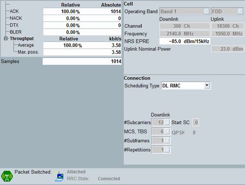

Measurement View
The main view of the BLER measurement shows the measurement results and the most important settings of the "NB-IoT signaling" application. Additional settings of the "NB-IoT signaling" application can be accessed via the "Signaling Parameters" softkey and the related hotkeys.
The "BLER Config"/"Config" hotkey opens either the configuration dialog of the measurement or the configuration dialog of the signaling application, depending on which softkey is active.

BLER main view
For a detailed description of the individual results, see "BLER Measurement".
For result retrieval commands, see "Measurement Results".